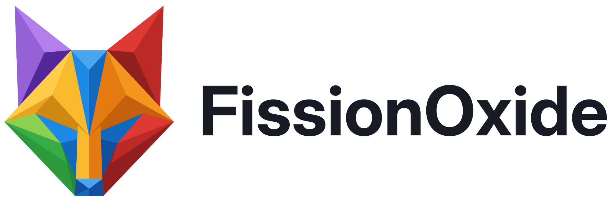
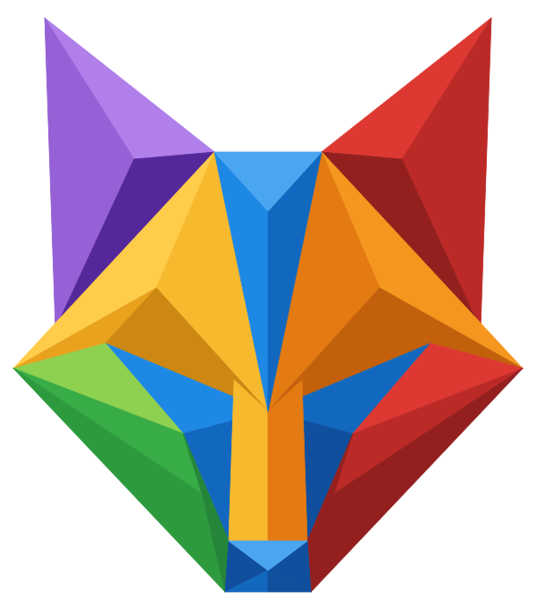
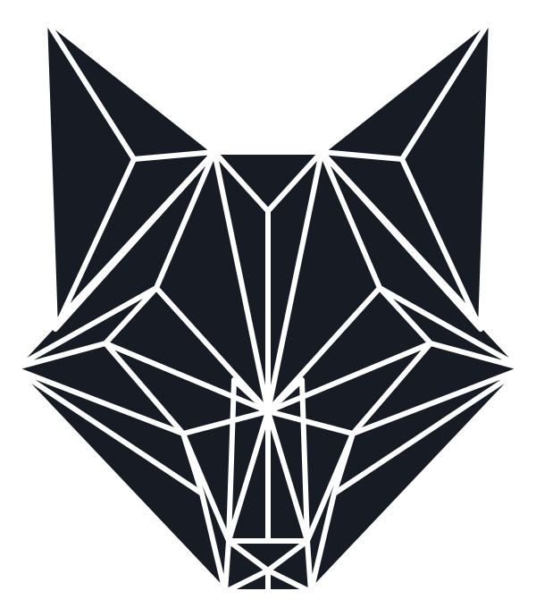
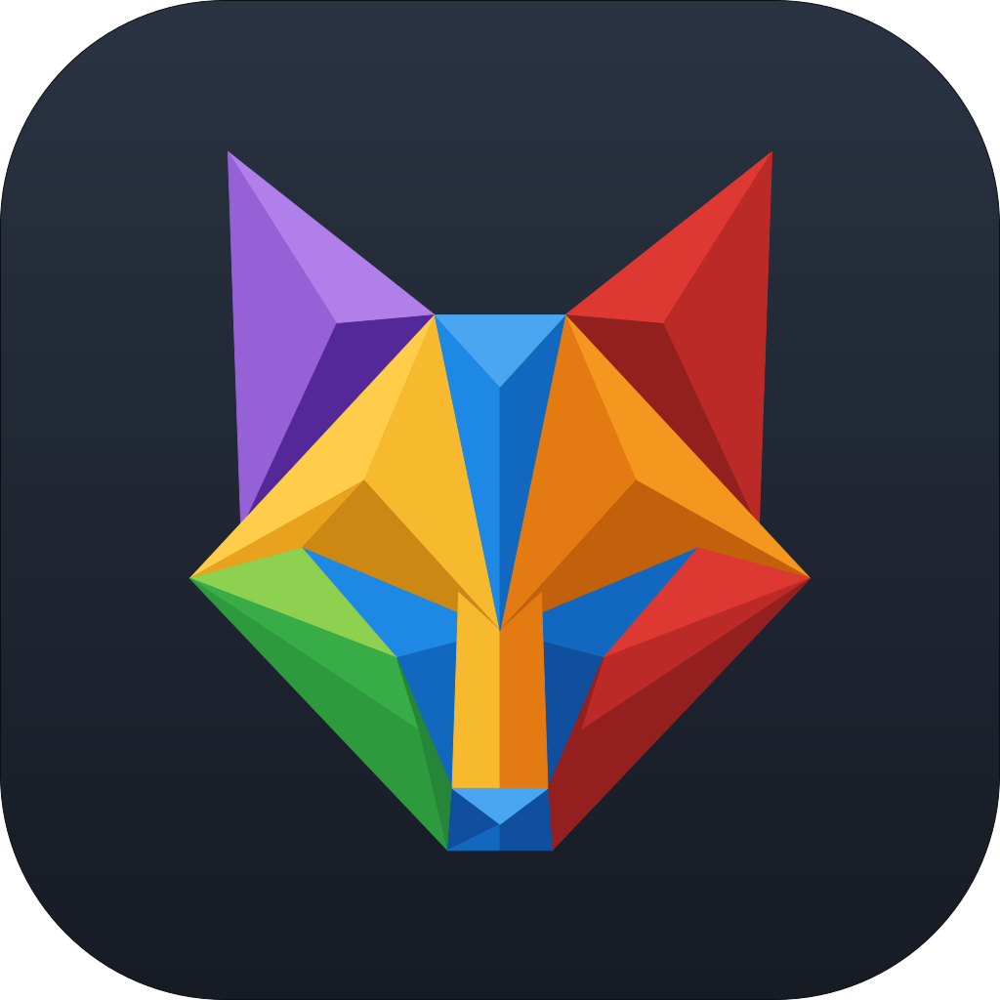
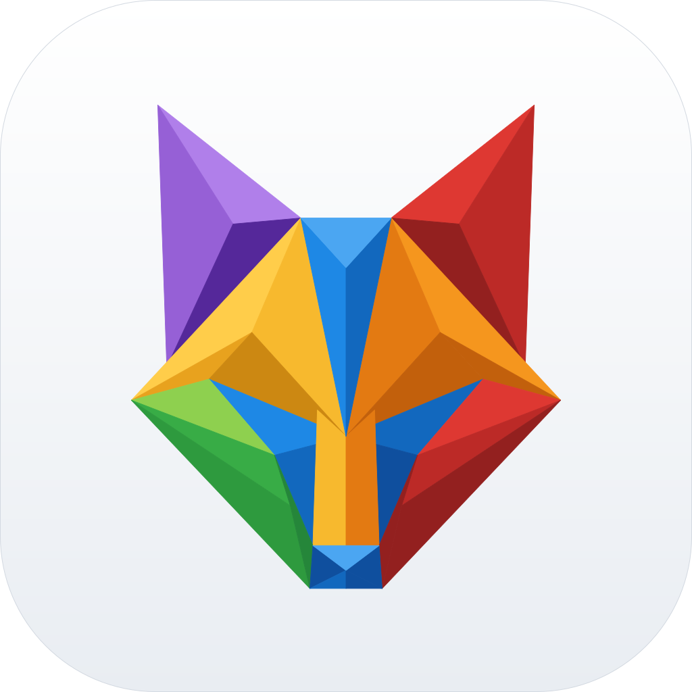

Blue
--fox-blueSolid modelling, and the app's primary accent (selection, links, primary buttons)
On the fox: Forehead, eye mask and chin
light
#4BA6F2base
#1E88E5dark
#1268BEdeep
#0F4F9E
FissionOxide is parametric 3D CAD. Its fox is made of the colours of the app itself: every facet is the colour of one part of the tool set, so the logo and the toolbar read as one family.
FissionOxide: one word, capital F and capital O. In code and files the short name is
fox (crates fox-*, .fox designs, FOX_* settings).

Full colour on any background, light or dark.
The same file; no dark variant needed.

For print, engraving, embossing and stamps.

On photos and strong colour.

Dark tile, the default for docks, taskbars and stores.

For a light tile where the platform calls for it.
Each family's base is the colour of its icons in the app; light, dark and deep are the fox's lit and shaded facets, and hover and pressed states.
--fox-blueSolid modelling, and the app's primary accent (selection, links, primary buttons)
On the fox: Forehead, eye mask and chin
#4BA6F2#1E88E5#1268BE#0F4F9E--fox-orangeSurface modelling
On the fox: Right cheek and muzzle
#FFA54D#F5961E#E37A12#C2600C--fox-amberConstruction geometry (planes, axes, points)
On the fox: Left cheek and muzzle
#FFCD4A#F7B92E#E8A21E#CC8812--fox-greenInspecting, measuring and selecting
On the fox: Left jaw
#8ED04F#38AC46#2E9A3E#25863A--fox-redDelete and stop actions
On the fox: Right ear and right jaw
#F0625A#DE3832#BC2A27#93201F--fox-purpleAssemblies, joints and highlights
On the fox: Left ear
#B07FEA#9660D6#7846BC#55289A--fox-tealSketching
#33ABB3#0096A0#007F88#006168--fox-goldMesh bodies
#E0B95D#D6A834#B68F2C#8B6D22--fox-coralSecondary warm accent in icons
#F0816D#EC6248#C9533D#9A402F#121418#161B24#2A3342#2C3646#344052#707A88#9AA4B2#CCD2DA#DCE1E7#EEF0F3#F3F5F8#FAFBFC#FFFFFFUse these semantic names in new pages and apps; tokens.css switches them with the viewer's theme.
--fox-background | #FFFFFF | |
--fox-surface | #F3F5F8 | |
--fox-surface-raised | #FFFFFF | |
--fox-text | #161B24 | |
--fox-text-muted | #707A88 | |
--fox-border | #CCD2DA | |
--fox-accent | #1E88E5 | |
--fox-accent-hover | #1268BE | |
--fox-accent-text | #FFFFFF | |
--fox-wordmark | #161B24 |
--fox-background | #121418 | |
--fox-surface | #1B2029 | |
--fox-surface-raised | #232A35 | |
--fox-text | #F3F5F8 | |
--fox-text-muted | #9AA4B2 | |
--fox-border | #2A3342 | |
--fox-accent | #4BA6F2 | |
--fox-accent-hover | #6DB8F5 | |
--fox-accent-text | #121418 | |
--fox-wordmark | #F3F5F8 |
Aa Bb 0123
Inter DisplayWordmark, headlines · weights 600, 700Aa Bb 0123
InterBody text, UI labels · weights 400, 500, 600Aa Bb 0123
JetBrains MonoCode, expressions, G-code · weights 400, 600Inter and JetBrains Mono are free (SIL Open Font License). Roboto is the fallback.
logo/fox.svg | The fox, full colour, transparent. The everyday mark. |
logo/fox-mono-ink.svg | One colour, for light backgrounds, print, engraving and stamps. |
logo/fox-mono-white.svg | One colour, for dark or photographic backgrounds. |
logo/wordmark.svg | Fox + name; the name switches colour with the viewer's theme. |
logo/wordmark-light.svg | Fox + name for light backgrounds. |
logo/wordmark-dark.svg | Fox + name for dark backgrounds. |
logo/icon.svg | App icon on the dark tile (the default). |
logo/icon-light.svg | App icon on the light tile. |
logo/png/ | PNG renders of the logos above. |
logo/motion/splash.svg | Start-up animation: the fox bursts in, "FOX" opens out to the name. Plays once, about 3 s. |
logo/motion/loader-explode.svg | Loading indicator: the facets drift apart and snap back (2.4 s loop). |
logo/motion/loader-ripple.svg | Loading indicator: a pulse ripples out through the facets (1.6 s loop). |
logo/motion/splash-letters.png | The splash's letters, for apps that play the splash themselves (fox-brand's animate). |
web/tokens.css | CSS custom properties, with light and dark themes. |
web/tokens.js | The tokens as an ES module. |
web/tailwind.preset.js | Tailwind preset: fox colours, fonts and radii. |
web/head.html | Favicon, manifest, social-card and font tags to paste into a page. |
web/og-image.png | 1200 x 630 link preview. |
tokens.json | The source of every colour and size here. |